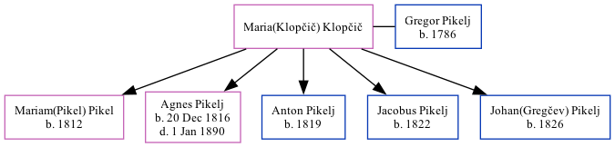

Maria(Klopčič) Pikelj (née Klopčič)
[ Home ] | [ Calendar ] | [ Surnames Index ] | [ Family History ]Maria(klopčič) Klopčič was the 3 times great-grandmother of Michele Copp (née Phillips) and had 5 children with Gregor Pikelj: Mariam(Pikel), Agnes, Anton, Jacobus and Johan(Gregčev).
Children
- Mariam(Pikel) was born in 1812
- Agnes was born on Dec 20, 1816
- Anton was born in 1819
- Jacobus was born in 1822
- Johan(Gregčev) was born in 1826
Family Tree
Generated by ged2site. Last updated on Sep 18, 2024